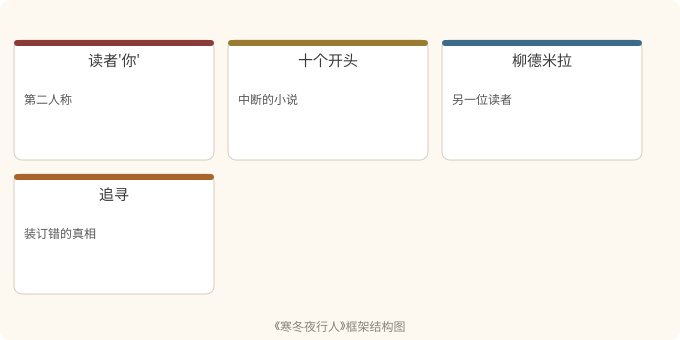

寒冬夜行人
一、基本信息
| 作者 | 卡尔维诺 |
|---|---|
| 成书/出版 | 1979年（作者页 B096 口径：寒冬夜行人（1979）） Italo Calvino — Encyclopaedia Britannica（百科全书） |
| 国别/地区 | 意大利 |
| 时代 | 现当代 · 20世纪 |
| 体裁 | 长篇小说 |
| 语言 | 意大利语 |

《寒冬夜行人》框架结构图（主题·结构图）
二、创作背景
作者页（B096）：卡尔维诺 major_works 载'寒冬夜行人（1979）'（B096 作者页定位，详见 kanbujian 条核对）。
结构（通说待核）：'你'（读者）的阅读框架 + 十个'开头'——每部小说都在最精彩处中断。
三、内容脉络
读者'你'与'另一位读者'柳德米拉追寻被装订错乱的小说（通说待核）。
十个互不相干的小说开头（通说待核）。
四、主要人物表
| 人物 | 身份 | 说明 |
|---|---|---|
| 你（读者） | 主人公 | 第二人称叙事 |
| 柳德米拉 | 读者 | 另一位读者（通说待核） |
五、主题与艺术特点
- 阅读的行为本身成为小说（通说）。
- '开头'的收集与中断美学（通说待核）。
- 作者、读者、出版者的元小说三角（通说待核）。
六、影响与评论
- 作者页：卡尔维诺晚期代表作（B096 作者页口径）。
Italo Calvino — Encyclopaedia Britannica（百科全书） - 元小说的世界性经典（通说待核）。
Italo Calvino — Encyclopaedia Britannica（百科全书）
七、阅读建议
难点
- 元小说的自反结构。
- 十种文体的模仿。
- 《寒冬夜行人》（译林出版社，通说待核）。
- 意大利文原版（Einaudi）。
先《看不见的城市》后本作。
八、待核实
- 十个开头篇名核对。
- 1979年出版（Einaudi说）核对。
- 中译本信息核对。
本页主要来源
卡尔维诺的其他收录作品：看不见的城市